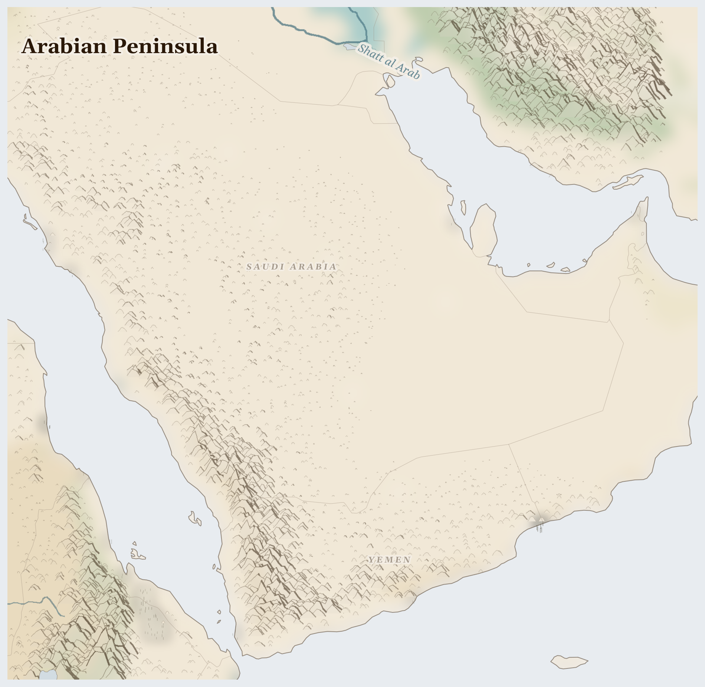

Arabian Peninsula
Saudi Arabia, Yemen
Palearctic
This is a land of golden deserts so big that some parts have never felt rain — and yet people have lived here for thousands of years, finding every hidden spring. In the south rise green mountains where the clouds catch, and all around it runs the busy blue sea.
How Life Works Here
Deep under the desert lies oil, which giant ships carry away to run much of the world — it has made some cities here sparkle with towers. In the mountains of Yemen, farmers build stone terraces like giant staircases and keep bees that make some of the most famous honey on Earth.
Yemeni terrace farmers, Women managing household food gardens in Yemen.
Desalination plant operators (world's largest capacity), Urban households and industrial consumers in Saudi Arabia.
Outdoor workers (construction, agriculture) facing lethal wet-bulb temperatures (>35°C threshold approached), Yemeni farmers losing remaining arable land to land turning to desert, Hajj pilgrims …
What Is Happening
Yemen has had a long war. People have been killed, and very many families do not have enough food — while just across the desert stand some of the richest cities in the world. That is hard to understand, and it is right to feel that it is unfair. But helpers keep going: port workers unload grain ships, nurses keep clinics open in the mountains, and families share bread and beans at sunset.
Something Wonderful
The frankincense in some churches' incense comes from scraggly little trees that grow only here and in a few nearby lands. Three thousand years ago, camel caravans carried it along desert roads. When you smell incense, you are smelling Arabia.
Let's Do Something Together
Follow Water on a Map
Find a river on your map or globe. Trace it with your finger from where it starts high up in the mountains all the way down to where it meets the sea. Water travels a very long way! Families who live near this river use it to drink, to wash, and to grow food.
- world map or globe
- blue crayon or marker
For grown-ups
Rivers in this region are contested resources — upstream dams and irrigation diversions reduce flow to downstream communities who depend on seasonal flooding for agriculture.
Let Us Pray Together
Thank you, God, for water. Help the families who need clean water today.
Leader: We pray for those living under violence. For communities enduring fighting in this region.
All: Lord, hear our prayer.
Leader: We pray for water and land. For the land itself, its rivers and aquifers stretched thin across the region.
All: Lord, hear our prayer.
Leader: We pray for Yemen. Especially for Yemen, facing the most severe convergence of crises in this region.
All: Lord, hear our prayer.
Leader: We pray for the helpers. For humanitarian workers and missionaries in Arabian Peninsula.
All: Lord, hear our prayer.
The Lord is my light and my salvation; whom then shall I fear? The Lord is the strength of my life; of whom then shall I be afraid?
Collect
Almighty God, who called your Church to bear witness that you were in Christ reconciling the world to yourself: help us to proclaim the good news of your love, that all who hear it may be drawn to you; through him who was lifted up on the cross, and reigns with you in the unity of the Holy Spirit, one God, now and for ever.
Amen.
Talk About It
Two children could live a short plane ride apart — one in a shining tower, one in a mountain village without enough dinner. What would you want each of them to know about the other?
One Thing We Can Do
Honey on bread or in tea? Yemen's mountain honey is famous. Next time you taste honey, thank God for bees and beekeepers — and ask for peace and full tables in Yemen.